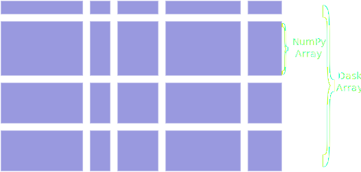

dask
 High-level interfaces: collections with an interface very similar to numpy/pandas Use case: pandas dataframe bigger than RAM Low-level interfaces for parallel computing
Low-level interfaces for parallel computing

Other goodies:
- live diagnostic dashboard
- statistical profiler
Try dask in your browser via [binder]((https://mybinder.org/v2/gh/dask/dask-examples/master?urlpath=lab)